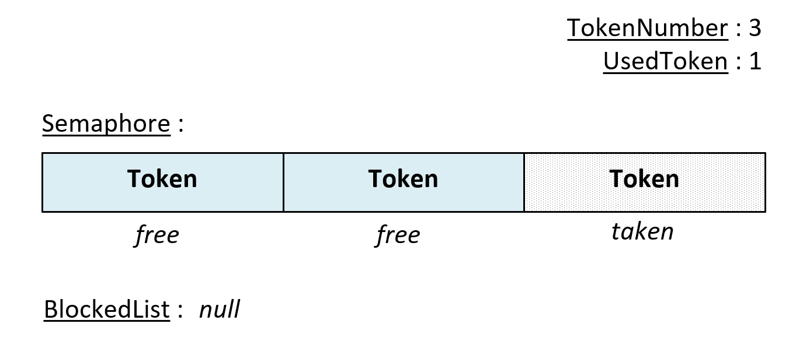
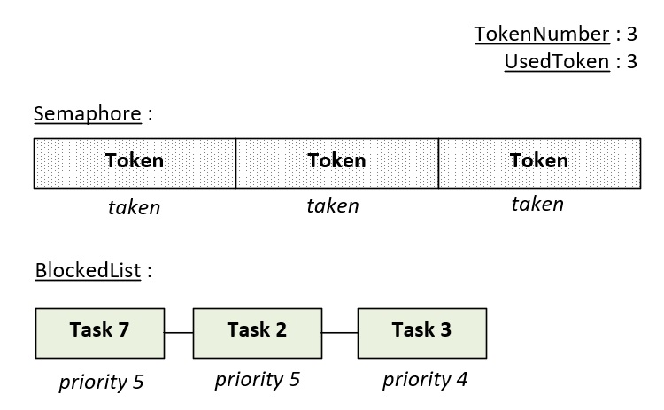
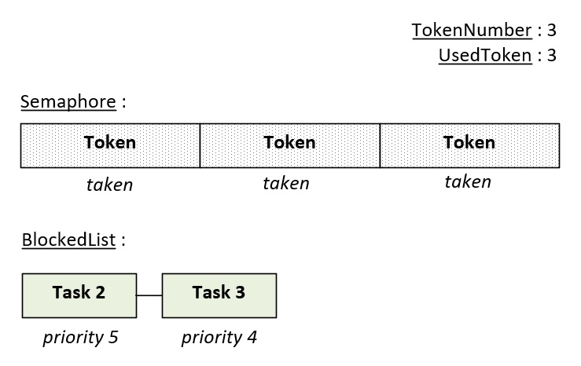
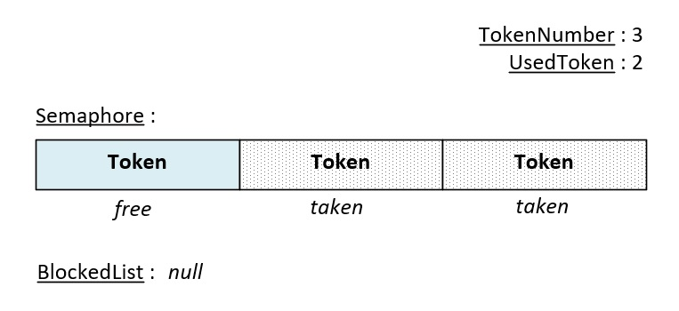

Partager les ressources critiques avec les Sémaphores
Le module semaphore permet de limiter le nombre de tâches qui accèdent simultanément à une ressource. Il permet également de synchroniser tâche et interruption. Cette page détaille le fonctionnement et l'utilisation des fonctions de ce module.
1. Synthèse des fonctions
Les fonctions de ce module sont déclarées dans le fichier mk_semaphore.h :
| Fonction | Description |
|---|---|
| mk_ |
Crée un sémaphore. |
| mk_ |
Prend un jeton d'un sémaphore. |
| mk_ |
Libère un jeton d'un sémaphore. |
| mk_ |
Supprime un sémaphore. |
2. Fonctionnement
Un sémaphore est un compteur à jetons. Le nombre de jetons est défini à la création. Il correspond au nombre de tâches pouvant accéder simultanément à la ressource protégée par le sémaphore. Un jeton est soit disponible, soit non disponible. Quand il est non disponible, le jeton est détenu par une tâche.
💬
La figure ci-dessous montre l'état initial d'un sémaphore constitué de 3 jetons dont seulement un est utilisé :

Les sémaphores sont alloués par le noyau dans l'espace privilégié. Ils sont constitués d'une variable stockant le nombre total de jetons (TokenNumber), d'une variable stockant le nombre de jetons non disponibles (UsedToken) et d'une liste stockant les tâches en attente d'un jeton (BlockedList).
💬
Le nombre de sémaphores pouvant être alloués par le noyau est limité. Il est défini à la
compilation par la
constante K_
Les tâches interagissent avec un sémaphore de plusieurs manières. Lors d'un take, la tâche demande au noyau de lui attribuer un jeton. Si un jeton est disponible, le noyau le fournit et la tâche poursuit alors son exécution :

Lorsqu'aucun jeton n'est disponible, la tâche peut décider de se bloquer en attendant la libération d'un jeton.
💬
Les tâches de la liste d'attente sont triées par ordre de priorité. Si plusieurs tâches attendent un jeton, la tâche la plus prioritaire sera réveillée en premier. Lorsque plusieurs tâches possèdent la même priorité, la première tâche à avoir été insérée dans la liste est réveillée.
La figure ci-dessous montre la situation où trois tâches sont en attente d'un sémaphore qui n'a plus de jeton :

Les tâches 2 et 7 sont les tâches les plus prioritaires mais possèdent une priorité identique. Dans cette situation, la tâche réveillée en premier sera la première à avoir été insérée dans la liste. Dans l'exemple ci-dessus, le noyau réveillera d'abord la tâche 7 puis les tâches 2 et 3.
Lors d'un release, un jeton pris par une tâche est restitué au sémaphore. Si au moins une tâche est en attente de celui-ci, le noyau attribue immédiatement le jeton à la tâche la plus prioritaire :

La tâche 7 s'est vue attribuer le jeton et a donc été retirée de la liste d'attente. La figure ci-dessous montre l'évolution du sémaphore après 3 release successifs :

On remarque que toutes les tâches en attente d'un jeton ont été servies et qu'un jeton supplémentaire s'est libéré.
⚠️
Le nombre de jetons disponibles dans un sémaphore ne peut pas dépasser le nombre total de jetons. Un release sur un sémaphore ne possédant que des jetons disponibles aboutit à une erreur.
3. Avantages et inconvénients
Un sémaphore possède les avantages suivants :
- ✔Il permet à plusieurs tâches d'utiliser simultanément une ressource.
- ✔Il permet de synchroniser tâche et vecteur d'interruption.
- ✔Il n'a pas besoin de buffer applicatif.
Néanmoins, un sémaphore n'a pas de propriétaire. Le noyau ne sait pas quelle tâche détient les jetons et ne peut donc pas réaliser d'héritage de priorité. Une tâche peu prioritaire détenant un jeton peut alors retarder une tâche très prioritaire (inversion de priorité).
💬
Pour protéger l'accès exclusif à une ressource partagée entre plusieurs tâches, il est préférable d'utiliser un mutex. Le sémaphore est plus adapté au comptage de ressources et à la synchronisation.
4. Utilisation
La création d'un sémaphore s'effectue avec la fonction mk_
/* Pointeur du sémaphore */ K_MK_PRIVILEGED_BSS_MEMORY T_mkSemaphore* g_semaphore; /* Une tâche privilégiée */ void mk_task_privileged ( T_mkAddr p_param ) { /* Déclaration de la variable de retour */ T_mkCode l_result; /* Création d'un sémaphore binaire (1 jeton au total) */ /* Aucun jeton n'est utilisé à la création */ /* Il est protégé et ne peut pas être manipulé par des tâches non privilégiées */ l_result = mk_semaphore_create ( &g_semaphore, K_MK_AREA_PROTECTED, 1, /* Nombre total de jetons */ 0 ); /* Nombre de jetons utilisés */ /* ... */ for ( ;; ) ; }
Après sa création, un jeton est pris avec mk_semaphore_take et restitué avec mk_semaphore_release. Le paramètre p_mkTick définit le comportement de la tâche lorsque le sémaphore n'a plus de jeton disponible. L'exemple ci-dessous montre comment protéger l'accès à une ressource unique avec un sémaphore binaire :
/* Une tâche privilégiée */ void mk_task_privileged ( T_mkAddr p_param ) { /* Déclaration de la variable de retour */ T_mkCode l_result; while ( 1 ) { /* La tâche attend au maximum 10 ticks qu'un jeton se libère */ l_result = mk_semaphore_take ( g_semaphore, 10 ); if ( l_result == K_MK_OK ) { /* Le jeton a été pris, la ressource peut être utilisée ... */ /* Libération du jeton */ l_result = mk_semaphore_release ( g_semaphore ); } else if ( l_result == K_MK_ERROR_TIMEOUT ) { /* Aucun jeton ne s'est libéré pendant 10 ticks */ } else { /* Gestion des erreurs ... */ /* K_MK_ERROR_PARAM, K_MK_ERROR_ISR, K_MK_ERROR_RIGHT */ } } }
💬
Si le paramètre p_mkTick est nul et si le sémaphore n'a plus aucun
jeton disponible, la fonction mk_
Un sémaphore à compteur permet de limiter l'accès à des ressources identiques. L'exemple ci-dessous autorise trois tâches à utiliser simultanément un des trois canaux de communication d'un périphérique :
/* Création d'un sémaphore à compteur possédant 3 jetons disponibles */ l_result = mk_semaphore_create ( &g_semaphore, K_MK_AREA_PROTECTED, 3, 0 ); /* ... */ /* Dans chacune des tâches utilisatrices */ /* Les trois premières tâches obtiennent un jeton et les autres seront */ /* bloquées tant qu'aucun jeton ne s'est libéré */ l_result = mk_semaphore_take ( g_semaphore, K_MK_TASK_WAIT_FOREVER ); if ( l_result == K_MK_OK ) { /* Utilisation d'un canal ... */ /* Le jeton est libéré. Si des tâches sont en attente, la tâche */ /* la plus prioritaire sera réveillée */ l_result = mk_semaphore_release ( g_semaphore ); }
Un sémaphore peut également synchroniser une tâche et une interruption en utilisant la fonction mk_semaphore_release. Pour ce faire, un sémaphore binaire doit être créé avec son jeton utilisé :
/* Tâche de traitement */ void mk_handler_task ( T_mkAddr p_param ) { /* Création d'un sémaphore binaire dont le jeton est non disponible */ T_mkCode l_result = mk_semaphore_create ( &g_semaphore, K_MK_AREA_PROTECTED, 1, /* Nombre total de jetons */ 1 ); /* Nombre de jetons utilisés */ while ( 1 ) { /* Attente infinie de l'interruption */ l_result = mk_semaphore_take ( g_semaphore, K_MK_TASK_WAIT_FOREVER ); if ( l_result == K_MK_OK ) { /* Traitement de l'événement ... */ } } } /* Vecteur d'interruption */ void IRQHandler ( void ) { /* Réveil de la tâche de traitement */ T_mkCode l_result = mk_semaphore_release ( g_semaphore ); /* Si K_MK_ERROR_TIMEOUT, tous les jetons sont déjà disponibles */ ( void ) l_result; }
⚠️
L'interruption doit être moins prioritaire que le vecteur SVC pour
pouvoir utiliser les appels système (priorité numérique
supérieure ou égale à K_
💬
Un schéma identique à celui ci-dessus peut être utilisé pour synchroniser deux tâches plutôt qu'une tâche et un vecteur d'interruption.
La dernière fonction de l'API est la fonction mk_semaphore_delete. Elle permet de détruire le sémaphore en demandant au noyau de le désallouer :
/* Suppression du sémaphore */ T_mkCode l_result = mk_semaphore_delete ( g_semaphore ); /* Si une erreur s'est produite */ if ( l_result != K_MK_OK ) { /* Gestion des erreurs ... */ /* K_MK_ERROR_PARAM, K_MK_ERROR_ISR, K_MK_ERROR_RIGHT */ }
5. Protéger ses sémaphores
Les sémaphores peuvent être créés avec les attributs K_
Lorsque l'attribut K_
Du fait de leur niveau d'exécution, l'ensemble des règles de protection ne s'applique pas aux vecteurs
d'interruption. La fonction mk_
Les sémaphores étant alloués par le noyau dans l'espace privilégié, aucune règle de placement ne s'applique. Seules les variables stockant leurs adresses doivent être accessibles aux tâches qui les utilisent. Les règles de placement de ces variables sont détaillées dans l'article Protéger son programme avec Mk.
6. API
6.1. La fonction mk_semaphore_create()
Cette fonction crée un sémaphore.
Prototype :
T_mkCode mk_semaphore_create ( T_mkSemaphore** p_mkSemaphore, uint32_t p_mkAreaType, uint32_t p_mkTokenNumber, uint32_t p_mkInitialTokenNumber );
Paramètres :
- p_mkSemaphore [out]
Adresse d'un pointeur de type T_mkSemaphore*.
- p_mkAreaType [in]
Type du sémaphore. Les valeurs possibles sont les suivantes :
- K_MK_AREA_PROTECTED : le sémaphore est protégé, il ne peut pas être manipulé par des tâches non privilégiées.
- K_MK_AREA_UNPROTECTED : le sémaphore n'est pas protégé, il peut être manipulé par des tâches privilégiées ou non privilégiées.
- p_mkTokenNumber [in]
Nombre total de jetons du sémaphore. Ce paramètre ne peut pas être nul.
- p_mkInitialTokenNumber [in]
Nombre de jetons non disponibles à la création du sémaphore. Ce paramètre doit être inférieur ou égal à p_mkTokenNumber.
Retour :
- K_MK_OK : le sémaphore a été créé.
- K_MK_ERROR_PARAM : le sémaphore n'a pas été créé car au moins un paramètre est invalide.
- K_MK_ERROR_MALLOC : le sémaphore n'a pas été créé car le nombre maximal de sémaphores pouvant être alloués a été atteint.
- K_MK_ERROR_ISR : le sémaphore n'a pas été créé car cette fonction a été exécutée dans un vecteur d'interruption.
- K_MK_ERROR_RIGHT : le sémaphore n'a pas été créé car une tâche non privilégiée ne peut pas créer un sémaphore protégé.
Note :
- Cette fonction ne peut pas être exécutée dans un vecteur d'interruption.
- La constante K_
MK_ définit le nombre maximal de sémaphores pouvant être créés.SCHEDULER_ MAX_ NUMBER_ OF_ SEMAPHORES
6.2. La fonction mk_semaphore_take()
Cette fonction prend un jeton dans un sémaphore. Si aucun jeton n'est disponible, la tâche peut être bloquée en attendant qu'un jeton soit libéré.
Prototype :
T_mkCode mk_semaphore_take ( T_mkSemaphore* p_mkSemaphore, uint32_t p_mkTick );
Paramètres :
- p_mkSemaphore [in, out]
Adresse d'une structure de type T_mkSemaphore.
- p_mkTick [in]
Durée maximale de blocage de la tâche. Les valeurs possibles sont les suivantes :
- 0x0 : la fonction retourne immédiatement si aucun jeton n'est disponible.
- 0x1 à 0xFFFFFFFE : la tâche est bloquée pendant la durée spécifiée (en multiple de tick) tant qu'aucun jeton n'est disponible.
- 0xFFFFFFFF (K_MK_TASK_WAIT_FOREVER) : la tâche est bloquée tant qu'aucun jeton n'est disponible.
Retour :
- K_MK_OK : un jeton a été pris par la tâche.
- K_MK_ERROR_PARAM : aucun jeton n'a été pris car le paramètre est invalide.
- K_MK_ERROR_TIMEOUT : aucun jeton n'a été pris car aucun jeton ne s'est libéré dans le délai imparti.
- K_MK_ERROR_ISR : aucun jeton n'a été pris car la fonction a été exécutée dans un vecteur d'interruption.
- K_MK_ERROR_RIGHT : aucun jeton n'a été pris car une tâche non privilégiée ne peut pas manipuler un sémaphore protégé.
Note :
- Cette fonction ne peut pas être exécutée dans un vecteur d'interruption.
- Lorsque plusieurs tâches sont bloquées sur le même sémaphore, le jeton libéré est attribué à la tâche la plus prioritaire.
6.3. La fonction mk_semaphore_release()
Cette fonction libère un jeton d'un sémaphore. Si au moins une tâche est en attente du sémaphore, la tâche la plus prioritaire est réveillée et le jeton lui est attribué.
Prototype :
T_mkCode mk_semaphore_release ( T_mkSemaphore* p_mkSemaphore );
Paramètres :
- p_mkSemaphore [in, out]
Adresse d'une structure de type T_mkSemaphore.
Retour :
- K_MK_OK : un jeton a été libéré.
- K_MK_ERROR_PARAM : aucun jeton n'a été libéré car le paramètre est invalide.
- K_MK_ERROR_TIMEOUT : aucun jeton n'a été libéré car le sémaphore a déjà libéré tous ses jetons.
- K_MK_ERROR_RIGHT : aucun jeton n'a été libéré car une tâche non privilégiée ne peut pas manipuler un sémaphore protégé.
Note :
- Cette fonction peut être exécutée dans un vecteur d'interruption.
- Cette fonction peut libérer un jeton qui n'a pas été pris par la tâche appelante.
6.4. La fonction mk_semaphore_delete()
Cette fonction détruit un sémaphore.
Prototype :
T_mkCode mk_semaphore_delete ( T_mkSemaphore* p_mkSemaphore );
Paramètres :
- p_mkSemaphore [in, out]
Adresse d'une structure de type T_mkSemaphore.
Retour :
- K_MK_OK : le sémaphore a été détruit.
- K_MK_ERROR_PARAM : le sémaphore n'a pas été détruit car le paramètre est invalide.
- K_MK_ERROR_ISR : le sémaphore n'a pas été détruit car la fonction a été exécutée dans un vecteur d'interruption.
- K_MK_ERROR_RIGHT : le sémaphore n'a pas été détruit car une tâche non privilégiée ne peut pas manipuler un sémaphore protégé.
Note :
- Cette fonction ne peut pas être exécutée dans un vecteur d'interruption.
Attention :
⚠️
- Les tâches bloquées par la fonction mk_
semaphore_ ne sont pas réveillées lorsque le sémaphore est détruit.take
6.5. Les définitions
Le module semaphore peut être configuré à l'aide des définitions suivantes :
| Définition | Description | Valeur |
|---|---|---|
| K_MK_ |
Cette constante définit le nombre de sémaphores pouvant être créés. Elle ne peut pas être nulle. | 32 |
Les sémaphores ne possédant qu'un jeton sont appelés sémaphores binaires alors que les sémaphores en possédant plusieurs sont appelés sémaphores à compteur.